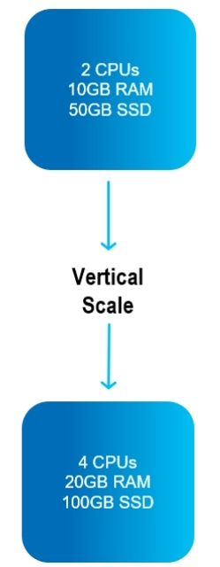

In
It is critically important to be able to rescale an application while it is online, without downtime or performance degradation. GS provides this capability.
GS allows two kinds of dynamic, online rescaling: vertical scaling, and horizontal scaling.
This is only relevant for
Vertical scaling, referred to as On Demand Scale Up/Down, allows the amount of RAM and CPU to be increased or decreased - without downtime - for an active GigaSpaces cluster.
For example, additional memory or CPUs may be added to an existing physical node.

On Demand Scale Up/Down can be used for applications that have many "atomic" transactions (logical units of work), often using relational databases.
Vertical scaling can be used for a traditional DBMS (Database Management System) where atomic transactions are performed in the same physical node.
Horizontal scaling, referred to as On Demand Scale Out/In, means to add or reduce the number of partitions used for an application.
For example, additional partitions may be created in the same server, or alternatively, servers may be added or removed.
Big data is often stored in geographically dispersed nodes, which includes partitioning of databases.
If the application involves few cross-partition joins, it may be appropriate for On Demand Scale Out/In.
NoSQL databases often use On Demand Scale Out/In.